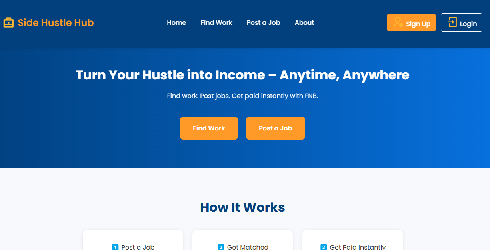

Hello, I'm
Thando
Full Stack Developer
I build clean, user-centered web experiences. I enjoy solving problems with JavaScript, Python, and modern frameworks.

About Me
I’m Thando — a Full Stack Developer transitioning into Cloud and Security Engineering. My current focus is on building secure, cloud-aware systems and understanding how automation, identity, and AI fit into real-world security workflows.
- Strong foundation in web development with Python, JavaScript, and Django.
- Actively learning cloud security concepts such as IAM, RBAC, and least-privilege access.
- Exploring security automation, Human-in-the-Loop systems, and AI-assisted security using RAG.
- Focused on building portfolio projects that demonstrate secure design and audit-ready thinking.
Experience & Skills
Frontend
- HTML — Experienced
- CSS — Experienced
- JavaScript — Intermediate
- Responsive & accessible UI design
Backend
- Python — Intermediate
- Django — Fundamentals
- RESTful API concepts
- PostgreSQL — Basics
Security (Current Focus)
- Cloud security fundamentals — Basic
- Identity & Access Management (IAM) — Basic
- RBAC & least-privilege principles — Basic
- Security logging & audit concepts — Basic
- Incident response workflow design — Intermediate
- Human-in-the-Loop (HITL) security patterns — Intermediate
- Retrieval-Augmented Generation (RAG) concepts — Intermediate
Cloud (Current Focus)
- Cloud computing fundamentals — Basic
- Shared responsibility model — Basic
- Azure cloud concepts & services — Basic
- Azure IAM & RBAC — Basic
- Cloud-native application design — Intermediate
- Python automation for cloud workflows — Intermediate
- Audit-aware & policy-driven design — Intermediate
Projects

Sip & Slice Website
Responsive frontend project built with HTML, CSS, and JavaScript. Focused on clean UI, accessibility, and maintainable structure.

Side Hustle Hub (Hackathon Project)
Full-stack web application built during the FNB Hackathon. Gained experience collaborating in a team, designing features, and delivering under time constraints.

Get in Touch
With Me